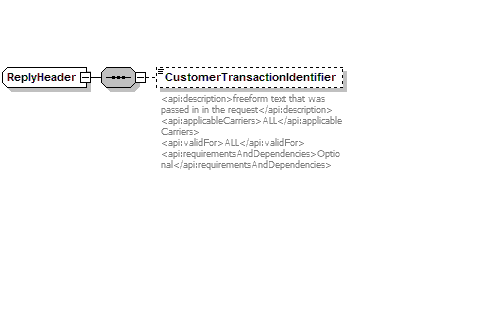
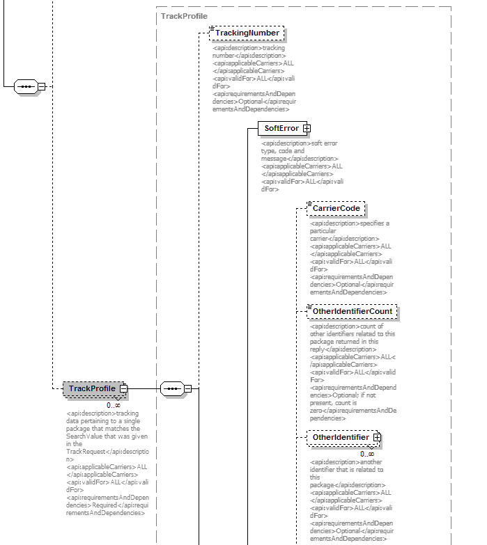
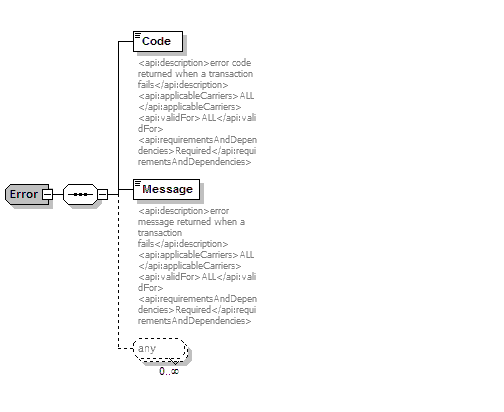

Using the Fedex Tracking Control
Before you can use the Fedex Tracking control, you may need to register
with Fedex. Also you need to configure
the Fedex Tracking Control with the properties, as described in the
section on configuring the Fedex
Tracking Control.
The Fedex Tracking Control provides a single method for tracking
the package information, as described below.
org.controlhaus.schema.fedex.FDXTrackReplyDocument.FDXTrackReply track(org.controlhaus.fedex.impl.FedexTrackRequest fedexTrackRequest) throws java.lang.Exception
Invoking the control
The Fedex tracking control can be invoked as follows:
org.controlhaus.fedex.impl.FedexTrackRequestImpl fedexTrackRequest = new org.controlhaus.fedex.impl.FedexTrackRequestImpl();
fedexTrackRequest.setPackageIdentifierType("some number to track transaction");
fedexTrackRequest.setAccountNumber("your account number");
fedexTrackRequest.setMeterNumber("your meter number");
fedexTrackRequest.setCarrierCode("carrier code");
fedexTrackRequest.setPackageIdentifier("package identifier of the package to be tracked");
fedexTrackRequest.setPackageIdentifierType("package identifier type");
org.controlhaus.schema.fedex.FDXTrackReplyDocument.FDXTrackReply result = control.track(fedexTrackRequest);
Using the results
The 'org.controlhaus.schema.fedex.FDXTrackReplyDocument.FDXTrackReply'
is an XMLBean build
from the Fedex xml response and schema. The most significant
information mentioned here, will to get you started.
The FDXTrackReply XMLBean contains significant elements. The
first is the 'ReplyHeader' which contains data about your transaction.
The
second significant element isTrackProfile, which contains the
information related to
tracking for the Package you requested. Other is Error,
which contains the information related to
the error, which might occur due to different reasons.
Getting the ReplyHeader
The ReplyHeader is obtained as follows:
org.controlhaus.schema.fedex.ReplyHeader replyHeader = fdxTrackReply.getReplyHeader();
The ReplyHeader represents the following XML Schema fragment:

ReplyHeader contains, customer transaction identifier (if you have
provided one). This can be used for transaction handling.
Getting the TrackProfile
TrackProfile is one of the most important xml element, as it provides
all the tracking information. The TrackProfile's are obtained as
follows:
org.controlhaus.schema.fedex.TrackProfile[] trackProfiles = fdxTrackReply.getTrackProfileArray();
The TrackProfile represents the following XML Schema fragment:

TrackProfile contains information about tracking number, carrier code,
desitination address, delivered date, delivered time, package and scan
information.
Checking the Error from the response
The Error is obtained as follows:
org.controlhaus.schema.fedex.Error error = fdxTrackReply.getError();
The Error represents the following XML Schema fragment:

Error contains details about the error
e.g. Code and Message etc.
The Java Page Flow sample that accompanies the Fedex Tracking Control
demonstrates
how to use control and how to navigate these XMLBeans in a JSP.